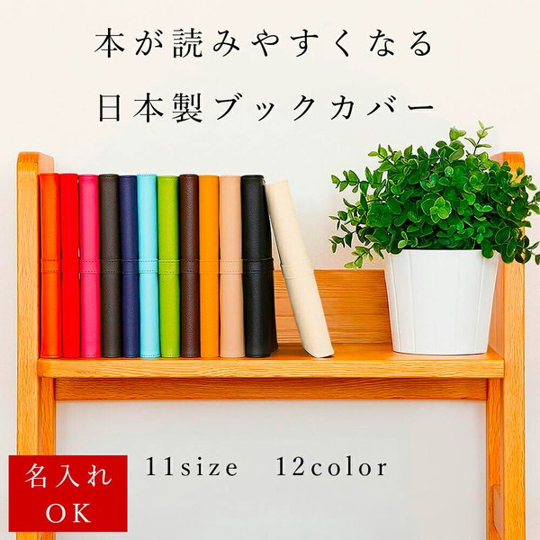
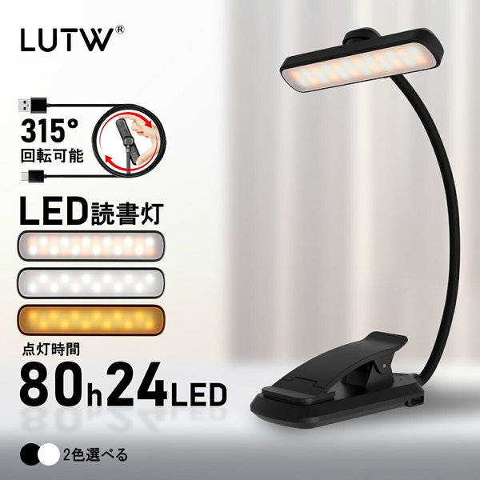
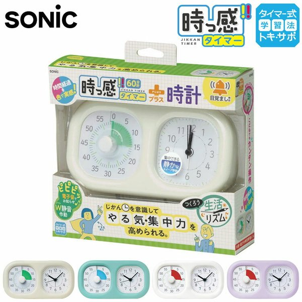
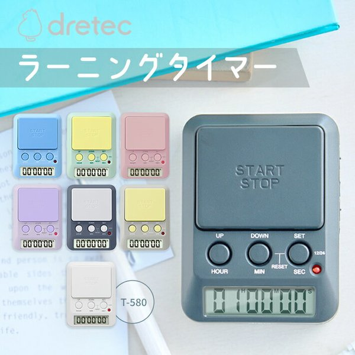
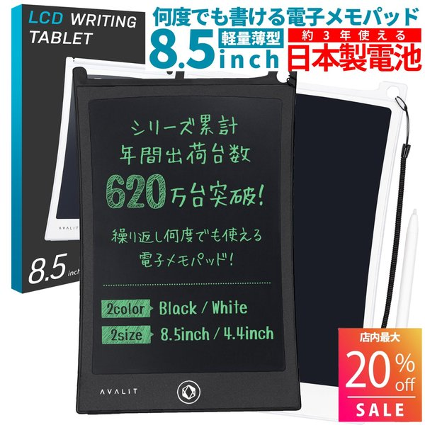
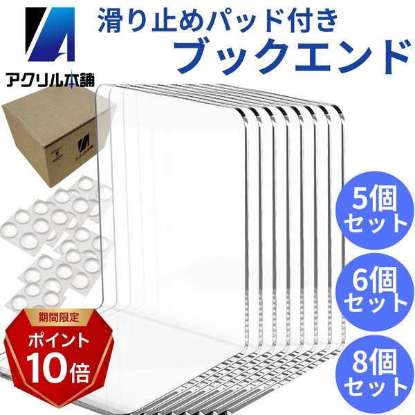
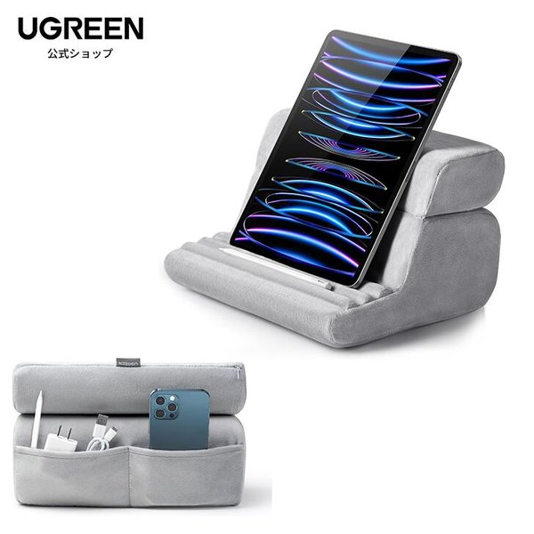
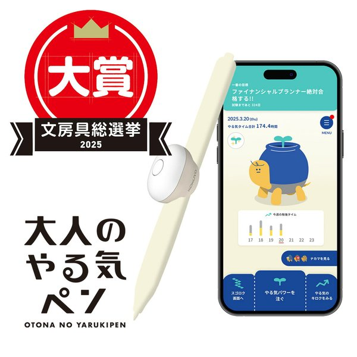
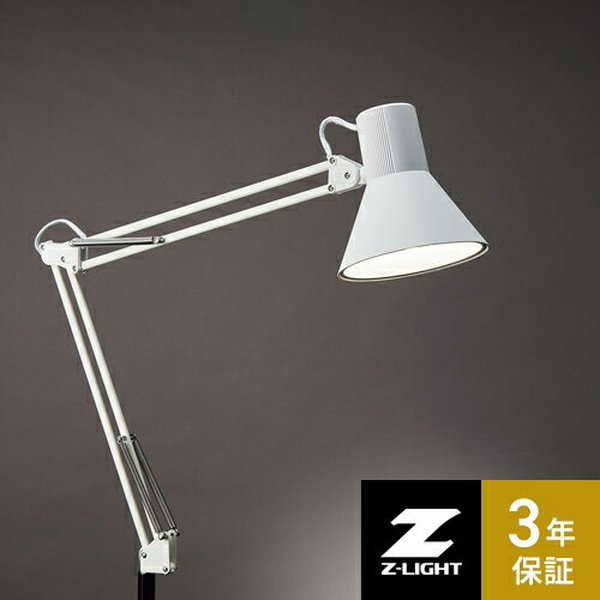

【2026年】読書・資格勉強グッズ10選｜ブックスタンド・本革ブックカバー・LED読書灯・学習タイマー・電子メモで集中できる机をつくる
読書や資格の勉強が続かないのは、意志の問題より環境の問題です。本が閉じてしまう、手元が暗い、時間が分からない。どれも道具で解決できます。
揃える順番は3つ。まず姿勢。ブックスタンドで本を立てると、うつむかずに読めるので首と肩が楽になります。次に光。手元を照らす読書灯と、机全体を照らすデスクライトは役割が違います。寝る前の読書ならクリップ式、机で勉強するなら演色性の高いデスクライトを。最後に時間管理。学習タイマーは残り時間が見えるものを選ぶと、だらだらが減ります。記録を残したいなら、勉強時間を自動で記録するデバイスも選択肢です。
本記事では、楽天市場で人気・高評価の読書と資格勉強グッズ10選を、実売価格とレビュー評価つきで写真付き紹介します。
- おすすめ10選 スペック・特徴比較表
- BEST 1｜アクリル ブックスタンド 読書スタンド
- BEST 2｜ブックカバー サイズオーダー 名入れ対応
- BEST 3｜LED読書灯 24LED 回転式ブックライト
- BEST 4｜学習タイマー トキサポ 時っ感タイマープラス
- BEST 5｜ラーニングタイマー T-587
- BEST 6｜電子メモパッド 8.5インチ ロック機能付き
- BEST 7｜ブックエンド 滑り止めパッド付き（5個/6個/8個）
- BEST 8｜タブレットスタンド ピロースタンド クッション
- BEST 9｜大人のやる気ペン ラーニングデバイス
- BEST 10｜LEDデスクライト Z-108NW
- 【読者負担0円】買わなくても得する無料サービス
- まとめ：読書と資格勉強グッズ10選の選び方
| 順位 | 商品名 | ブランド | 最大の特徴・おすすめ理由 | 総合評価 |
|---|---|---|---|---|
| BEST 1 | アクリル ブックスタンド 読書スタンド | POWERNESS | 透明アクリルで圧迫感がない | 4.54 |
| BEST 2 | ブックカバー サイズオーダー 名入れ対応 | SION（シオン） | 11サイズ・12色から選べる | 4.60 |
| BEST 3 | LED読書灯 24LED 回転式ブックライト | LUTW | 24LEDで手元が明るい | 4.66 |
| BEST 4 | 学習タイマー トキサポ 時っ感タイマープラス | ソニック | 残り時間が色で見える | 4.52 |
| BEST 5 | ラーニングタイマー T-587 | ドリテック（dretec） | タイムトライアルで集中できる | 4.74 |
| BEST 6 | 電子メモパッド 8.5インチ ロック機能付き | GOODA（AVALIT） | 8.5インチで書きやすい | 4.41 |
| BEST 7 | ブックエンド 滑り止めパッド付き（5個/6個/8個） | アクリル本舗 | 透明アクリルで目立たない | 4.73 |
| BEST 8 | タブレットスタンド ピロースタンド クッション | UGREEN | 枕型クッションで安定する | 4.70 |
| BEST 9 | 大人のやる気ペン ラーニングデバイス | コクヨ | 勉強時間を自動で記録 | 4.51 |
| BEST 10 | LEDデスクライト Z-108NW | 山田照明（Z-LIGHT） | 本の文字が見やすい演色性 | 4.77 |
アクリル ブックスタンド 読書スタンド

POWERNESSのアクリル製ブックスタンドです。透明なアクリルなので、開いた本の下に敷いても圧迫感がなく、リビングのテーブルにも置けます。角度と高さを調節でき、使わないときは折りたたんで収納できます。教科書やレシピ本、タブレットを立てて読むときにも使えます。姿勢が前かがみにならないので、長時間の読書でも首が楽になります。楽天市場での実売価格は約5,880円（2026年11月時点）。
- 透明アクリルで圧迫感がない
- 角度と高さを調節できる
- 折りたたんで収納できる
- レビューは13件と少なく、アクリルなので傷が付きやすい
ブックカバー サイズオーダー 名入れ対応

ブックカバー専門店SIONの、サイズオーダーと名入れができるブックカバーです。文庫、新書、単行本、四六判、B6コミックなど11サイズ・12色から選べ、イニシャルを入れられます。PVCレザー製なので水に強く、汚れても拭き取れます。既製品のカバーがサイズの合わない本に悩んでいる人ほど、オーダーは効きます。楽天市場での実売価格は約1,490円（2026年11月時点）。
- 11サイズ・12色から選べる
- 名入れができる
- 拭けるPVCレザー
- オーダーなので、届くまでに日数がかかる
LED読書灯 24LED 回転式ブックライト

LUTWのLED読書灯は、24個のLEDを並べたクリップ式のブックライトです。3段階の調色と無段階の調光ができ、5段階の明るさから選べます。クリップで本やベッドのヘッドボードに挟め、フレキシブルアームで好きな角度に向けられます。充電式で最大80時間点灯するので、寝る前の読書や停電時の手元灯としても使えます。楽天市場での実売価格は約2,199円（2026年11月時点）。
- 24LEDで手元が明るい
- 3段階調色・無段階調光
- 最大80時間点灯
- レビューは79件と、まだ実績は少なめ
学習タイマー トキサポ 時っ感タイマープラス

ソニックの学習タイマー「時っ感タイマープラス」は、時間の経過が色で見える勉強用タイマーです。文字盤の色が減っていくので、あと何分残っているかが直感的に分かります。アラームと光で知らせ、消音にも設定できます。テストや受験の時間配分を練習するのにも向いています。楽天市場での実売価格は約3,600円（2026年11月時点）。
- 残り時間が色で見える
- アラームと光で知らせる
- 消音設定ができる
- 電池式なので、電池の予備を用意しておく
ラーニングタイマー T-587

ドリテックのラーニングタイマー T-587は、持ち運べる学習用タイマーです。タイムトライアル機能で、決めた時間内に何問解けたかを計れます。日にちのカウントダウン機能があるので、試験日までの残り日数を表示しておけます。アラームと光で知らせ、消音にも設定可能。色は6色から選べます。楽天市場での実売価格は約1,428円（2026年11月時点）。
- タイムトライアルで集中できる
- 試験日をカウントダウンできる
- 6色から選べる
- 文字盤が小さめで、離れた場所からは見にくい
電子メモパッド 8.5インチ ロック機能付き

GOODAの電子メモパッドは、8.5インチの液晶画面に手書きできるメモです。厚さ5mmで、ノートのように持ち歩けます。書いた内容はロック機能で保存でき、ボタン1つで消去できます。ボタン電池で繰り返し使えるので、紙のメモ帳を買い足す回数が減ります。勉強の計算用紙や買い物リスト、伝言メモとして使えます。楽天市場での実売価格は約1,370円（2026年11月時点）。
- 8.5インチで書きやすい
- ロック機能で保存できる
- 厚さ5mmで持ち歩ける
- 画面は暗い場所では見にくく、バックライトはない
ブックエンド 滑り止めパッド付き（5個/6個/8個）

アクリル本舗のブックエンドは、透明なアクリル製のL字型です。5個・6個・8個のセットから選べ、滑り止めパッド付きなので本を立てても倒れにくい。透明なので本棚やデスクの上でも目立たず、書類やファイルの仕切りにも使えます。教科書や参考書が増えてきた机の整理に向いています。楽天市場での実売価格は約1,880円（2026年11月時点）。
- 透明アクリルで目立たない
- 滑り止めパッド付き
- 5個から選べるセット
- レビューは44件と少なく、重い本には数個並べて使う
タブレットスタンド ピロースタンド クッション

UGREENのタブレットスタンドは、クッション素材の枕型です。膝の上に置いて、寝ながらでもタブレットやスマホを固定できます。4.7〜12.9インチに対応し、角度を自由に変えられます。クッションなので、ベッドやソファでも安定します。布団の中で動画を見る、膝にタブレットを置いて辞書を引く、といった使い方に向いています。楽天市場での実売価格は約2,890円（2026年11月時点）。
- 枕型クッションで安定する
- 4.7〜12.9インチに対応
- 角度を自由に変えられる
- レビューは10件と少なく、実績はまだこれから
大人のやる気ペン ラーニングデバイス

コクヨの「大人のやる気ペン」は、市販のペンに付けて使う学習記録デバイスです。ペンの動きを検知して、勉強した時間をアプリに記録します。文房具総選挙2025で大賞を受賞した商品で、三日坊主の人でも「やった分が見える」ことで続けやすくなります。iOS・Androidの両方に対応しているので、資格勉強の記録にも使えます。楽天市場での実売価格は約9,900円（2026年11月時点）。
- 勉強時間を自動で記録
- 文房具総選挙2025大賞
- iOS・Android両対応
- 専用アプリとスマホの連携が必要
LEDデスクライト Z-108NW

山田照明のZライトは、学習机向けのLEDデスクライトです。演色性が高く、本の文字がくっきり見えるので目が疲れにくいのが特徴。クランプ式で机の端に固定でき、アームを動かして好きな位置に光を当てられます。3年保証付きで、長く使う前提の作りです。子どもが大きくなっても使えるので、学習机の照明として選びやすいです。楽天市場での実売価格は約7,860円（2026年11月時点）。
- 本の文字が見やすい演色性
- クランプ式で場所を取らない
- 3年保証付き
- クランプ式なので、天板の厚さと形状を確認する
この記事の商品を買う前に、まずは無料で得する選択肢をチェック。どれも登録・利用は0円で、無料期間中に解約すれば料金はかかりません。読みたい雑誌がある人、ポイントを貯めたい人、アンケートなら気軽という人、それぞれに合うものを選べます。
初回31日無料・無料期間中に解約すれば0円 → 楽天ポイントモール｜登録無料で毎日ポイ活
買い物なしでもポイントが貯まる無料サービス → 楽天インサイト｜アンケートに答えてポイント
登録無料・すきま時間のアンケートで貯まる → 楽天カード｜年会費永年無料
新規発行・年会費ずっと0円 →
4つのサービスの違いと使い分けは「出費0円で得する！買わずにポイントが貯まる無料サービス厳選4選」でまとめています。
💡 まとめ：読書と資格勉強グッズ10選の選び方
読書と勉強の環境は、姿勢・光・時間の3つを整えると一気に楽になります。まずはブックスタンドで本を立て、目線を上げる。手元はLED読書灯、机全体は演色性の高いデスクライトで照らすと、文字がくっきり見えて目が疲れにくくなります。時間は、残り時間が色で見えるタイマーか、試験日をカウントダウンできるタイマーを1つ。勉強時間を記録したいなら、コクヨの大人のやる気ペンのように自動で残るものを使うと、三日坊主でも続けやすくなります。電卓代わりの電子メモ、本を仕切るブックエンド、膝に置くクッションがあると、机の上が整い、集中が途切れにくくなります。
楽天市場では「5と0のつく日」や「お買い物マラソン」などのキャンペーンに合わせて購入すると、ポイント還元が最大化してお得に手に入ります。ぜひチェックしてみてくださいね。